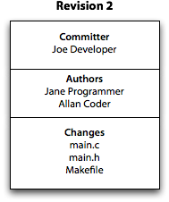
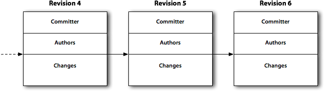
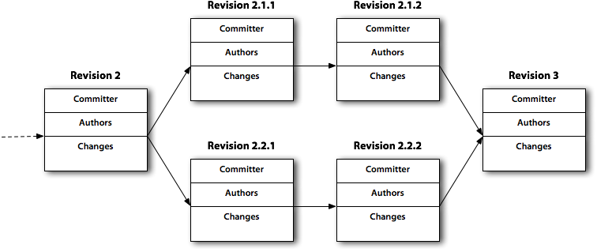
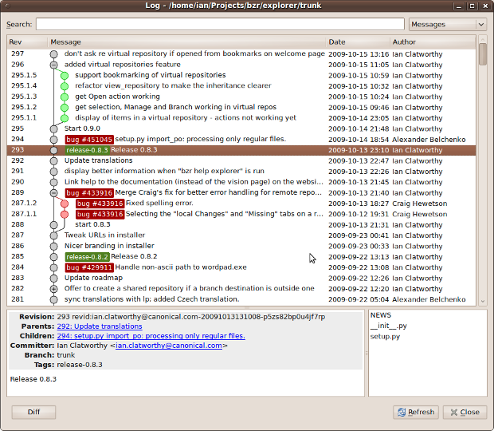

Abstract: Software development is characterized by refactorings, quandaries, bugs, eipiphanies and breakthroughs, and managing change is essential. Bazaar is a powerful, next-generation source control system that adapts to the dynamic of any development team. Here's an introduction.
Mark Twain once noted, "The time to begin writing an article is when you have finished it to your satisfaction. By that time you begin to clearly and logically perceive what it is that you really want to say." Twain's observation is right on the mark (no pun intended), and his wisdom applies just as well to software. Almost always, the subtleties, nuances, and scope of the problem at hand become clear only after the application has been written. Between typing the first line of code and packaging a release, there are any number of false starts, dead ends, rewrites, refactorings, quandaries, and bugs, and eipiphanies and breakthroughs.
Indeed, change is so constant during development that special software must be used to track modifications. Dubbed source control (or version control), this software records each and every revision made to the application. Source control lets you compare revisions, switch between one version of a file and the next, and gather revisions into a release. Features, process, and best practices vary from one source control system to another -- there are many proprietary and open source options available --- but the intent is universal: audit who did what and when. Popular commercial source control systems include Perforce and AccuRev; leading open source source control systems include Subversion, Arch, Mercurial, Git, and Bazaar.
Of the latter options, Bazaar is notable because it's employed to produce the Ubuntu Linux distribution, an enormous software project with thousands of components. Bazaar is also special because it can be adapted to virtually any team dynamic. For example, some development teams prefer centralization, where all changes are collected in and applied to one repository. (Subversion is a centralized system.) Other teams prefer decentralization, where each developer has an independent repository that can be shared as if it was the principal repository. In this scheme, one repository, owned collectively, can be designated as a hub for integration, but it differs only by convention. (Git is a decentralized system.) Another popular work style designates one developer as "gatekeeper", who has sole access to a canonical repository. Changes are submitted to the gatekeep, who assembles, reviews, approves, and applies changes to the master repository. Bazaar is flexible enough to accomodate each of these protocols. Like Subversion, Bazaar can sync with a central repository. Like Git, work can proceed locally, detached from any server.
Bazaar also has many other appealing features, such as an API for integration with other software tools, plugins to integrate Bazaar with Git and Subversion (among other systems), and a simple numbering scheme for branches that directly reflects the genealogy of the branch. You can also pick up Bazaar in a snap, making it a great choice for versioning your shell "dot" files, documents, and system configuration files. The documentation for Bazaar is outstanding: it's clear, concise, and practical.
Bazaar is available for all major operating systems. Source code is available, if you prefer to build from scratch, or you can download a suitable binary from the Bazaar home page. Bazaar is a collection of command-line utilities, but the Bazaar community has also crafted a number of graphical utilities. You can accelerate and facilitate adoption with the point-and-click tools and switch to the command-line tools as needed. You can even host your project on Launchpad, a service built around Bazaar (and managed by Canonical, the same company that produces Bazaar and Ubuntu Linux).
If you're using a Unix or Linux system, chances are that your distribution offers a pre-built Bazaar package. The Bazaar package is typically abbreviated as bzr; Bazaar-related packages use the same shorthand for a prefix. For instance, if you use Ubuntu or any Debian-derived Linux, you can find and install Bazaar software quickly with APT. Use apt-cache to search for "bzr".
$ # Find all the Bazaar-related tools in the APT repository $ apt-cache search bzr bzrtools - Collection of tools for bzr bzr-builder - construct a bzr branch from a recipe bzr-cvsps-import - CVS to Bazaar importer bzr-email - Notification email plugin for Bazaar bzr-fastimport - Fast-import/fast-export plugin for Bazaar bzr-git - Bazaar plugin providing Git integration bzr-gtk - provides graphical interfaces to Bazaar (bzr) version control bzr-loom - Focused patch plugin support for Bazaar bzr-pqm - bzr plugin to submit an email to a Patch Queue Manager bzr-rebase - Rebase plugin for Bazaar bzr-search - search plugin for Bazaar bzr-stats - statistics plugin for Bazaar bzr-svn - Bazaar plugin providing Subversion integration bzr-upload - Bazaar plugin for uploading to web servers ... bzr - easy to use distributed version control system # Install the core bzr package $ apt-get install bzr
The latter shell command downloads and installs the core Bazaar components. You control Bazaar through a single utility, aptly-named bzr. For a list of the most commonly-used commands, type bzr help.
$ bzr help Bazaar -- a free distributed version-control tool http://bazaar-vcs.org/ Basic commands: bzr init makes this directory a versioned branch bzr branch make a copy of another branch bzr add make files or directories versioned bzr ignore ignore a file or pattern bzr mv move or rename a versioned file bzr status summarize changes in working copy bzr diff show detailed diffs bzr merge pull in changes from another branch bzr commit save some or all changes bzr send send changes via email bzr log show history of changes bzr check validate storage bzr help init more help on e.g. init command bzr help commands list all commands bzr help topics list all help topics
If you want help with a specific command, type bzr help command, where command is the name of the command, such as bzr help init.
A series of Bazaar commands is called a recipe, and the online help provides countless recipes to jumpstart usage and teach best practices. For instance, the material for bzr help init provides a recipe to transform any directory into a Bazaar repository.
$ cd ~/project $ bzr init $ bzr add . $ bzr status $ bzr commit -m "imported project"
This recipe has five steps. First, change to the project directory you want to keep under source control. Next, run bzr init. This adds a subdirectory named .bzr to the current directory to contain the bookkeeping metadata for the repository. bzr add . recursively adds the contents of "dot" (the current directory) to the manifest of files managed by the repository, but does not snapshot the current state of the files. bzr commit actually records the state of all files in the repository and adds a brief annotation. You can provide the anotation as an argument to -m (be sure to use quotes to keep the sentence intact) or omit the option and create a note in your favorite text editor.bzr status reports what's ready to add to the repository, what's been changed, what's been elided, and more.
Bazaar shares much in common with other source control systems, although its implementations differ and, pleasingly, leverage facilities you already know how to use, such as SSH and URLs. Bazaar manages revisions, and can diverge and merge to create and collect branches, respectively. Here are some of the key concepts in Bazaar.

Figure 1: A Bazaar revision includes an ID, a committer, zero or more authors, and changes to one or more files.

Figure 2: Some development proceeds as a series of revisions.
However, development is rarely so orderly, especially when many developers are working in parallel. A revision can have multipe predecessors, too. In this case, a revision represents a merge.

Figure 3: Combining threads of development leads to a merge, a revision with multiple parents.

Figure 4: A graphical tool pictures Bazaar histories.
One of the strengths of Bazaar is its reuse of existing, familiar paradigms. A branch is simply a folder. You'll find other examples of common sense features throughout Bazaar. For example, if you use Bugzilla to track bugs, you can annotate a revision as a bug fix with the --fixes option.
In general, Bazaar manages entire directories of files. However, this can be avoided if you want to omit certain files from version control or operate on individual files or subdirectories. You need not use dot (.) to operate on the entire current directory, either initially or during the lifetime of the repository. Many Bazaar commands take a list of file and directory names and operate only on the specified entities.
For example, if you changed files easy.c, medium.c, and hard.c, but only want to commit the latter, simply name the file in the commit.
$ bzr commit -m "Fix bug no. 99." easy.c
Better yet, Bazaar also provides a special feature to group and isolate operations to particular files. A view is a collection of files and directories, and when a view is enabled, only the files in the collection are visible. You can create multiple views and switch among them, and you can disable and enable a view to reveal and hide files as necessary. As the Bazaar documentation summarizes, "Defining a view does not delete the other files in the working tree -- it merely provides a 'lens' over the working tree." Commands like bzr commit, bzr add, and bzr ls restrict operation to the current view. Other commands that operate on the file system are unaffected by views.
To ignore types of files, such as object files created by compilation or backup files created by your text editor, you can create an ignore file named .bzrignore at the top-level of your repository. Put this file under version control, too, to help collaborators avoid adding spurious files to the repository. The command bzr ignore adds entries to the file for you. The ignore file does not omit files already under version control; it omits only those not yet in the repository.
Oftentimes, a bug fix or enhancement spans multiple files and various sections of code in each file. Unless a developer is very careful to make discrete commits, features can become comingled, making it difficult to connect a batch of changes to a bug report or enhancement request. Or, more frequently, a developer may find it necessary to revert a file to a particular state to isolate a bug. In both cases, the developer may want to tease individual revisions from the whole. Bazaar provide shelves just for this purpose. You can shelve, or set aside, revisions, make commits (if necessary), and then unshelve, or restore, the changes to pick up where you left off previously. Cleverly, Bazaar shelves individual diffs.
Here's one possible scenario. Assume the file dictionary.txt contains three changes since it was last committed to the repository. You can compare the current state of your work with the repository using bzr diff.
$ bzr diff === modified file 'dictionary.txt' --- dictionary.txt 2010-04-10 23:57:00 +0000 +++ dictionary.txt 2010-04-10 23:58:40 +0000 @@ -1,2 +1,5 @@ +bonzo chico groucho +harpo +zeppo
As the diff shows, the first, fourth, and fifth lines are new. To set aside the changes, run bzr shelve. The command interactively prompts you whether each diff should persist or be shelved. If you want to annotate a shelf, provide the -m option again.
$ cat dictionary.txt bonzo chico groucho harpo zeppo $ bzr shelve -m 'Save other brothers for later.' --- dictionary.txt 2010-04-10 23:57:00 +0000 +++ dictionary.txt 2010-04-11 00:15:56 +0000 @@ -1,2 +1,5 @@ +bonzo chico groucho +harpo +zeppo Shelve? [yNfq?] y Selected changes: M dictionary.txt Shelve 1 change(s)? [yNfq?] y Changes shelved with id "1".
If you now examine the file, you should see just two lines. You can also use bzr shelve --list to see the list of shelves you have available.
$ cat dictionary.txt chico groucho $ bzr shelve --list 1: Save other brothers for later.
The inverse of shelve is unshelve. It restores the file to its previous state.
$ bzr unshelve Using changes with id "1". Message: Save other brothers for later. M dictionary.txt All changes applied successfully. Deleted changes with id "1". $ cat dictionary.txt bonzo chico groucho harpo zeppo
Although Bazaar can realize a centralized version control scheme, it is perfectly capable to power large-scale, distributed software development. Sharing is surprisingly simple and uses any number of existing Unix sharing technologies.
The simplest technology, and the default unless another choice is specified, is the local file system. You can share your branch with another developer using the handle file://path/to/your/branch, where path/to/your/branch is the absolute pathname to your branch, such as /Users/martin/code/emailer. Given the handle, another developer can create a branch based on your work with a single command:
$ bzr branch file://Users/martin/code/emailer
The branch command copies the complete history of this branch so you have everything you need to merge, branch, scan history, and more. Because a branch is just a folder, you need not use bzr branch. You can also copy a branch via cp -pr, expanding a tarball, or by a remote copy using something like rsync. You can also share a branch via SFTP, HTTP, FTP, and a special protocol built for Bazaar, prefaced with bzr:://. (For a complete list of supported protocols, type bzr help urlspec.) Once you have a branch, you can update it to match the state of the original using the command bzr pull.
Publishing a branch is as simple as sharing the branch's URL. You don’t need a special server to publish a Bazaar branch -- just make the branch's files and the .bzr directory available via any of the methods already mentioned. One can also push a branch (or the changes for a branch) with a special Bazaar command.
$ bzr push sftp://servername.com/path/to/directory
Each of the commands that work with branches accept a URL.
Bazaar has too many features to list here. For a complete introduction and a large catalog of compatible software, see the Bazaar home page. Bazaar also provides a "smart server" that tunnels a special Bazaar protocol via SSH. You or your system administrator can establish a smart server to host your projects on your own source code server. The administration documentation also explains how to combine Bazaar with plugins that amend core features. Moreover, the software provides hooks where you can inject your own scripts and code to perform other actions, such as deploying code or running continuous integration tests.